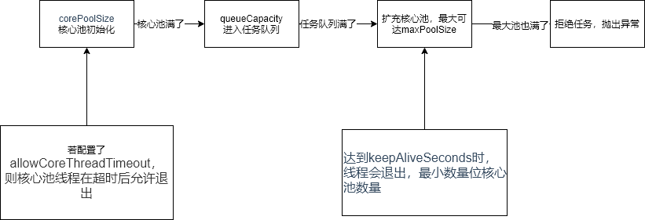

java线程池配置详解
java线程池配置详解
前言
网络资料多是复制粘贴，在此重写，以我为准。
结论
-
4核
// 核心线程池大小
private int corePoolSize = 20;
// 最大可创建的线程数
private int maxPoolSize = 80;
// 队列最大长度
private int queueCapacity = 400;
// 线程池维护线程所允许的空闲时间
private int keepAliveSeconds = 200;
-
2核
// 核心线程池大小
private int corePoolSize = 10;
// 最大可创建的线程数
private int maxPoolSize = 40;
// 队列最大长度
private int queueCapacity = 200;
// 线程池维护线程所允许的空闲时间
private int keepAliveSeconds = 100; -
1核
// 核心线程池大小
private int corePoolSize = 5;
// 最大可创建的线程数
private int maxPoolSize = 20;
// 队列最大长度
private int queueCapacity = 100;
// 线程池维护线程所允许的空闲时间
private int keepAliveSeconds = 50;
参数说明
ThreadPoolExecutor类可设置的参数主要有：
-
corePoolSize核心线程数，核心线程会一直存活，即使没有任务需要处理。当线程数小于核心线程数时，即使现有的线程空闲，线程池也会优先创建新线程来处理任务，而不是直接交给现有的线程处理。
核心线程在allowCoreThreadTimeout被设置为true时会超时退出，默认情况下不会退出。
-
maxPoolSize当线程数大于或等于核心线程，且任务队列已满时，线程池会创建新的线程，直到线程数量达到maxPoolSize。如果线程数已等于maxPoolSize，且任务队列已满，则已超出线程池的处理能力，线程池会拒绝处理任务而抛出异常。
-
keepAliveSeconds当线程空闲时间达到keepAliveSeconds，该线程会退出，直到线程数量等于corePoolSize。如果allowCoreThreadTimeout设置为true，则所有线程均会退出直到线程数量为0。
-
allowCoreThreadTimeout是否允许核心线程空闲退出，默认值为false。
-
queueCapacity任务队列容量。从maxPoolSize的描述上可以看出，任务队列的容量会影响到线程的变化，因此任务队列的长度也需要恰当的设置。
扩容流程：

参数配置
corePoolSize
任务主要分为两类计算密集型和IO密集型
目前大多数cpu都是多核多线程，像我是6核12线程，因此以往的用cpu核数计算并不恰当，应以实际线程数为主。
注意：有些cpu说是4核8线程，但实际上是6线程+2虚拟线程，此时要用6来计算。
或者直接一把梭：Runtime.getRuntime().availableProcessors()
在计算corePoolSize时涉及到一个阻塞系数的概念。
如果任务有50%的时间处于阻塞状态，则阻塞系数为0.5。则程序所需的线程数为处理器可用核心数的两倍。如果任务被阻塞的时间少于50%，即这些任务是计算密集型的，则程序所需线程数将随之减少，但最少也不应该低于处理器的核心数。如果任务被阻塞的时间大于执行时间，即该任务是IO密集型的，我们就需要创建比处理器核心数大几倍数量的线程。
计算公式：线程数 =cpu实际线程数/(1 - 阻塞系数)，其中阻塞系数的取值在0和1之间。计算密集型人物的阻塞系数为0，而IO密集型任务的阻塞系数则接近1。
通用的说，计算密集型的corePoolSize=cpu实际线程数+1
IO密集型的corePoolSize=cpu实际线程数*5
queueCapacity
任务队列的长度要根据核心线程数，以及系统对任务响应时间的要求有关。队列长度计算公式为(corePoolSize/tasktime)*responsetime。
一般来说，tasktime是0.1，responsetime是2，因此等价于
queueCapacity=20*corePoolSize
maxPoolSize
如果需要最大线程池扩容，则说明任务队列已满。在这种情况下，对于计算密集型的任务，扩容线程池意义不是很大，因为不需要上下文的切换，这种情况下建议增加物理核数；对于IO密集型的任务，说明IO的速度变慢，需要将空闲的cpu资源让给后续的线程，需要增加线程池的容量。
一般来说，我们设置为core的4倍。
maxPoolSize=4*corePoolSize
keepAliveTime
此参数设置的最大意义是当线程池维持在一个较高的使用率，延长线程存活时间可以有效的提高处理速度，避免无用的创建-销毁线程。
keepAliveTime = 5*responsetime * corePoolSize
allowCoreThreadTimeout
此参数建议维持默认false，不建议核心线程也退出。